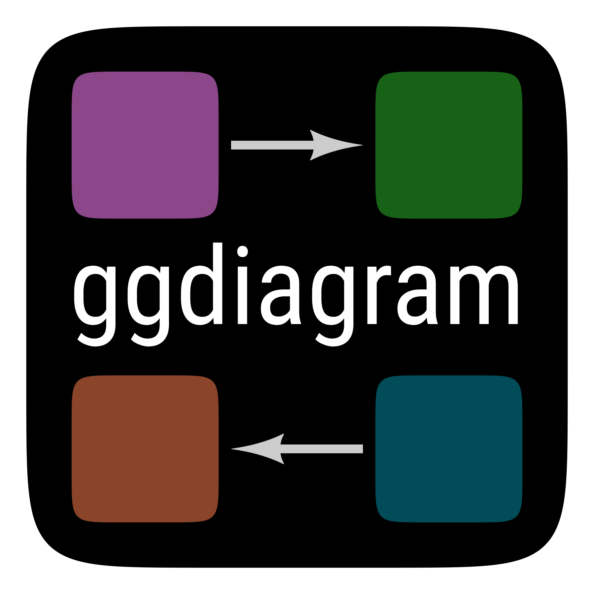

Find projection of a point on an object (e.g., line or segment)
Source:R/a_early.R
projection.RdFind projection of a point on an object (e.g., line or segment)
Arguments
- p
ob_point
- object
object (e.g., line or segment)
- ...
<
dynamic-dots> arguments passed to style object